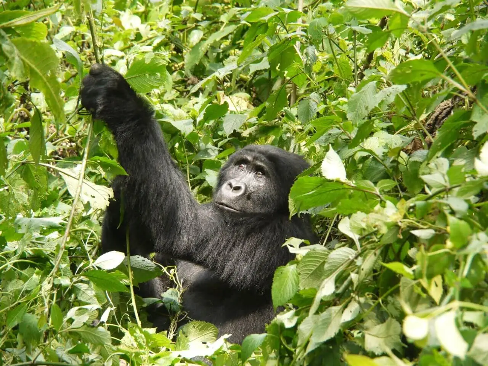
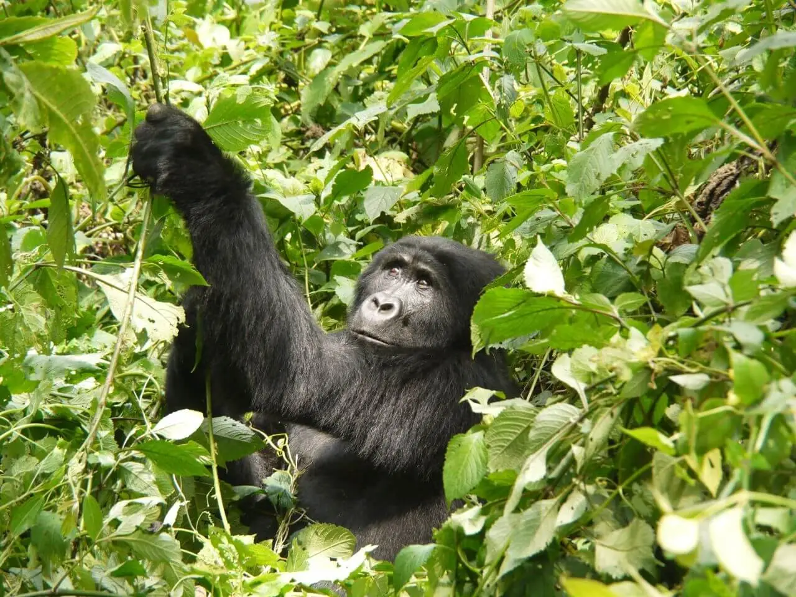
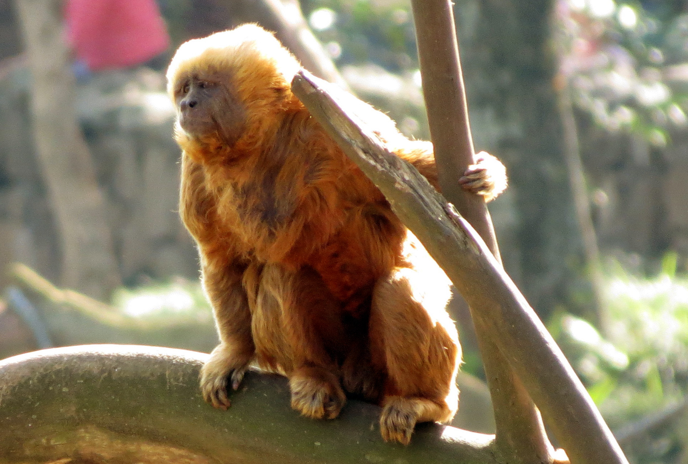
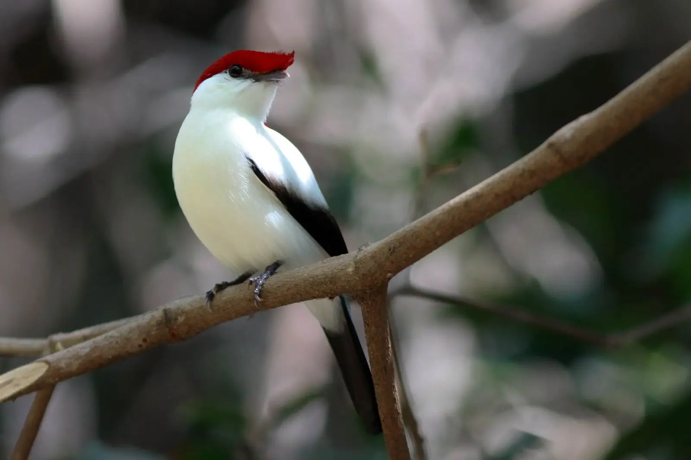
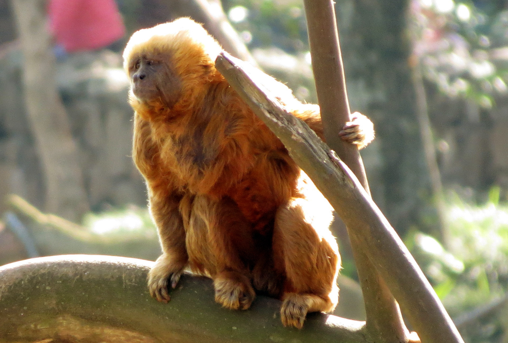
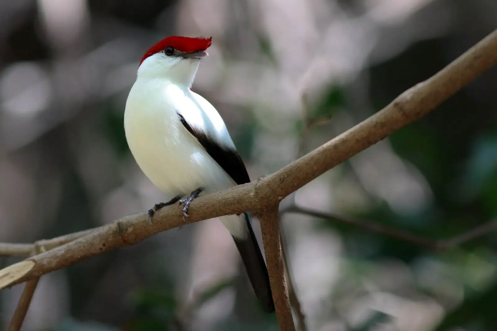

Seja muito bem-vindo ao site WildLife. Esse simples projeto foi desenvolvido por 5 estudantes do IFBA, Campus Irecê para a matéria de Engenharia de Software I 2024.1 (usando o modelo de ciclo de vida Waterfall). Nessa página, você vai encontrar as principais informações sobre animais que estão na lista de ameaçados de extinção. Além de claro, promover a conscientização da população sobre a vida terrestre, colaborando para o projeto "Objetivos de Desenvolvimento Sustentável das Nações Unidas".
Essa página contém botões, ilustrações e links interativos que proporcionam uma melhor experiência de navegação e utilização do website para o usuário!
ANIMAIS EM EXTINÇÃO

 

 



ONÇA PINTADA
A onça-pintada, também conhecida como onça-preta (no caso dos indivíduos melânicos), é uma espécie de mamífero carnívoro da família dos felídeos encontrada nas Américas. É o terceiro maior felino do mundo, após o tigre e o leão, e o maior do continente americano.
LOBO GUARA
O lobo-guará, também chamado guará, aguará, aguaraçu, lobo-de-crina, lobo-de-juba e lobo-vermelho, é uma espécie de canídeo endêmico da América do Sul. Suas marcas lembram as de uma raposa, mas não é uma raposa nem um lobo.
PANDA GIGANTE
O panda-gigante, ou só panda, é um mamífero omnívoro da família Ursidae endêmico da República Popular da China.
ARARA-AZUL-DE-LEAR
A arara-azul-de-lear é uma espécie de arara da família Psittacidae e gênero Anodorhynchus. É endêmica do Raso da Catarina, nordeste do estado da Bahia, Brasil.
GORILA DAS MONTANHAS
O gorila-das-montanhas é uma das duas subespécies de gorila-do-oriente. Há duas populações. Uma é encontrada nas Montanhas Virunga na África Central, em três parques nacionais: Parque Nacional Mgahinga, no sudoeste de Uganda; Parque Nacional dos Vulcões, no noroeste de Ruanda; e o Parque nacional de Virunga, no leste da República Democrática do Congo
CONDOR CALIFORNIANO
O condor-da-califórnia ou condor-californiano é uma ave da família Cathartidae. É nativo da América do Norte, sendo atualmente encontrado somente na região do Grand Canyon e das montanhas do oeste da Califórnia, nos Estados Unidos, e ao norte da Baixa Califórnia, no México. Apesar de outros membros fósseis serem conhecidos, é a única espécie sobrevivente do gênero Gymnogyps.
MACACO PREGO GALEGO
O macaco-prego-dourado ou macaco-prego-galego é uma espécie de macaco-prego, um macaco do Novo Mundo da família Cebidae e gênero Sapajus. Sua identidade e linhagem eram desconhecidas até 2005.
SOLDADINHO-DO-ARARIPE
O soldadinho-do-araripe é uma ave passeriforme da família Pipridae. O nome bokermanni é uma homenagem ao zoólogo brasileiro Werner Bokermann. É uma espécie em perigo crítico de extinção.